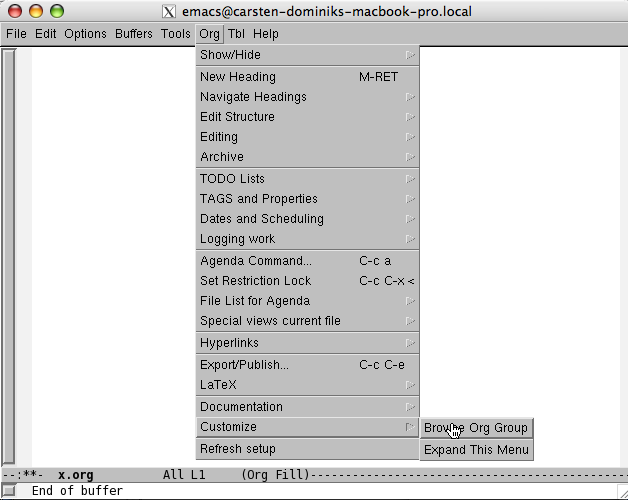
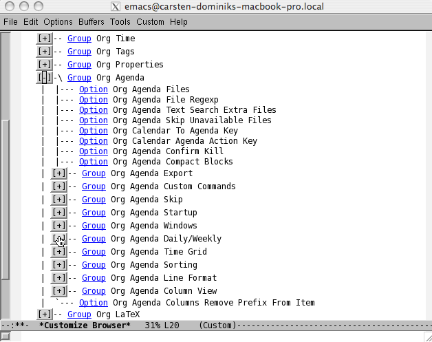
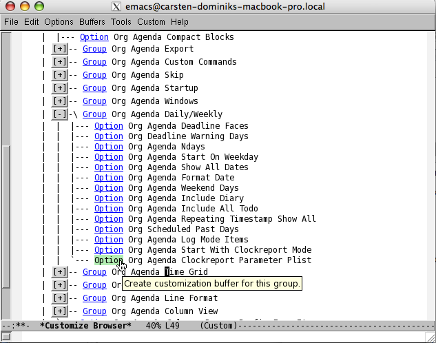
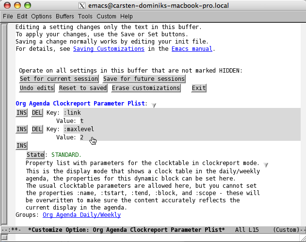

Customizing Org-mode
This page contains an illustrated example on how to use the Emacs customization system to find the right variable for a particular purpose. Org-mode contains more than 650 options that can be used to fine-tune a detail, and it can be daunting to find the right variable for a particular job - even though more often than not, the variable does exist.
The Emacs customize system offers a way out. With this tool, variables can be grouped and organized into a hierarchical system that makes it much easier to find the right one. The best way to start is to browse a customization group. This can be done with
#+example M-x customize-browse RET #+endexample
which enters the top-level group for all of Emacs and lets you drill down from there. Org-mode provides a special command to start directly in the Org group:
#+example M-x org-customize RET #+endexample
You can also access this command from the Org menu under Org ->
Customize -> Brows Org Group.
How to change the parameters for the clocktable in the Org-mode Daily Agenda
So here is an example. Recently, Flavio de Souza asked on emacs-orgmode@gnu.org how he could change the maximum level for the construction of the clock table in the Org Daily/Weekly agenda.
Here is the illustrated answer:
In an Org-buffer, use the menu to select Org -> Customize -> Browse Org Group

Open the “Org Agenda” group by clicking the “+” in front of it.

Inside you find another group: “Daily/Weekly Agenda”, and in that group there is the option “Org Agenda Clockreport Parameter Plist”:

When you select this variable, you are in a customization buffer where you can changes the parameters for this option, in your case you will set maxlevel to 3.

- After you are done, click on Set for current section and then on Save for future sessions near the top of the buffer.
It may not always be as simple to find the correct variable, but with some clicking around, you will get there. And if you find that a particular variable has a stupid name, or is not in the right group, drop us a note so that we can fix things.